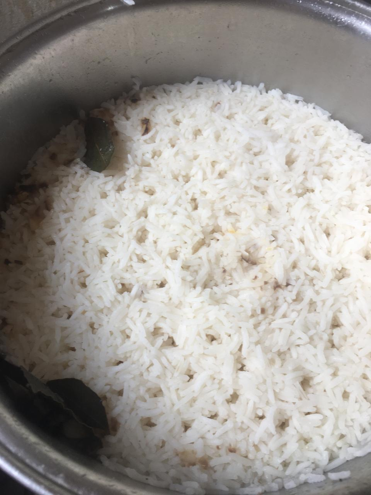

Receita de Arroz branco soltinho e bem cozido receita igual de restaurante
Ingredientes
2 xícaras de Arroz
4 xícaras de água
1 folha de louro
4 dentes de alho
2 colheres de sopa de óleo
1/2 de sopa de sal
o segredo do arroz soltinho e não lavar, fica igual restaurante
Pique 4 dentes de alho
Separe umas folhas de louro
Coloque o alho e a folha de louro na panela com 2 colheres de sopa de óleo
e deixa em fogo baixo ate dourar
Coloque 4 xícaras de água, 1/2 colher de sopa de sal,tampa a panela e deixe em fogo médio
verifique se a agua secou completamente fazendo um furo no meio do arroz com uma colher